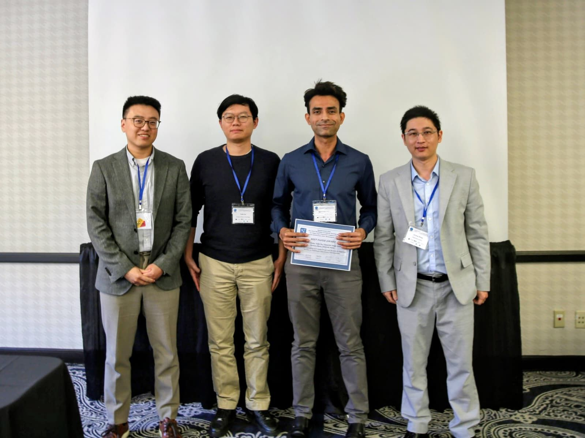

SpatialConnect 2025 Best Paper Award — ACM SIGSPATIAL Workshop

Our collaborative research, “Joint Optimization of Transit Stops and Routes to Improve Access to Essential Community
Destinations,” was awarded Best Paper at the SpatialConnect 2025 Workshop on Spatial Intelligence for Smart and Connected
Communities, co-located with ACM SIGSPATIAL.
This work introduces a location-aware optimization framework that jointly determines bus stop placement and route design to
maximize access to key destinations—grocery stores, medical facilities, and employment hubs. Applied to the City of Peachtree
Corners, Georgia, the model demonstrates how data-driven transit design can strengthen community-scale accessibility and
equity in suburban contexts.
This recognition reflects the broader goal of my research: building optimization and decision-support tools that integrate
mobility, equity, and community well-being to guide smarter transportation planning.